Eclipse开发插件¶
为了方便用户使用 MapReduce 及 自定义函数(UDF) 的SDK进行开发工作，ODPS提供了Eclipse开发插件。该插件能够模拟MapReduce及UDF的运行过程，为用户提供本地调试手段，并提供了简单的模板生成功能。
插件安装¶
下载Eclipse插件后，将插件放置在Eclipse安装目录的plugins子目录下。打开Eclipse，点击右上角的打开透视图(Open Perspective)：
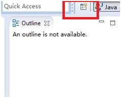{kind=link}
点击后出现下面的对话框：
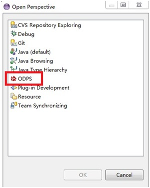{kind=link}
选择ODPS，随后点击OK键。同样在右上角会出现ODPS图标，表示插件生效：
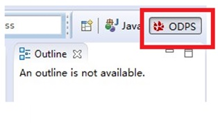{kind=link}
在左上角选择文件(File) -> 新建(New)-> ODPS Project，创建工程(示例中使用ODPS作为工程名)：
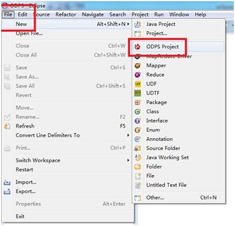{kind=link}
创建ODPS工程后会出现如下对话框。输入Project name，选择ODPS客户端路径(客户端需要提前下载)，并确认(点击Finish)：
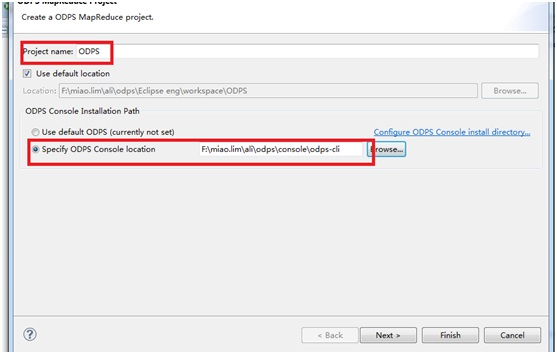{kind=link}
Note
关于ODPS客户端的介绍请参考 ODPS客户端参考手册 。
创建好工程后，在左侧包资源管理器(Package Explorer)中可以看到如下目录结构：
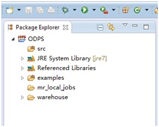{kind=link}
ODPS Eclipse插件安装结束。用户可以使用此插件编写MapReduce及UDF程序。关于插件中对MapReduce及UDF的功能介绍请参考 MapReduce开发插件介绍 及 UDF开发插件介绍 。
MapReduce开发插件介绍¶
右键选择src目录，选择新建(New) -> Mapper:
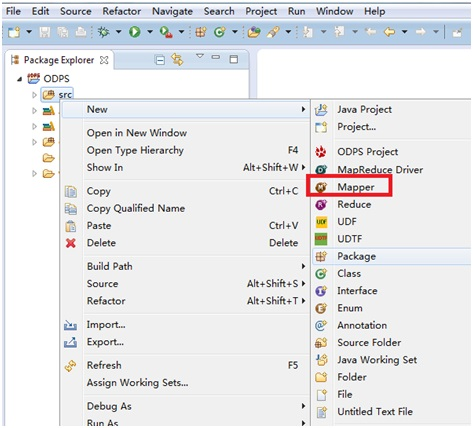{kind=link}
选择Mapper后出现下面的对话框。输入Package名称(可选)，Mapper类的名字，并确认：
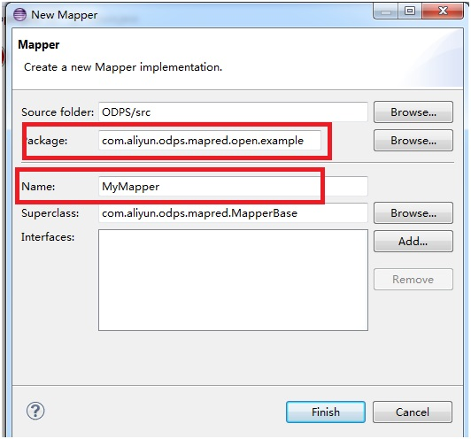{kind=link}
会看到在左侧包资源管理器(Package Explorer)中，src目录下生成文件MyMapper.java。该文件的内容即是一个Mapper类的模板：

编写模板内容：
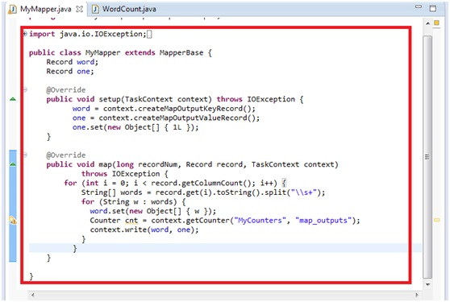{kind=link}
同理，右键选择src目录，选择新建(New) -> Reduce。输入Package名称(可选)，Reduce类的名字(本示例使用MyReduce)。同样在包资源管理器(Package Explorer)中，src目录下生成文件MyReduce.java。该文件的内容即是一个Reduce类的模板。编辑模板：
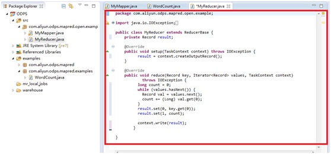{kind=link}
创建main函数: 右键选择src目录，选择新建(New) -> MapReduce Driver。填写Driver Name(示例中是MyDriver)，Mapper及Recduce类(示例中是MyMapper及MyReduce)，并确认。同样会在src目录下看到MyDriver.java文件：
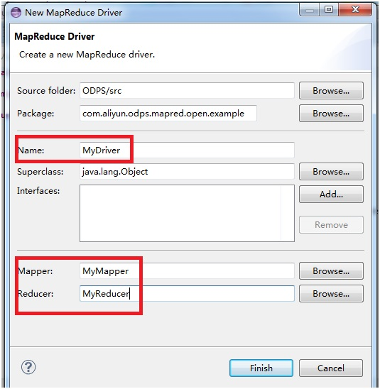{kind=link}
通常情况下，”MyDriver.java”的代码不需要进行修改，可以按照下面的步骤继续进行。在examples目录下找到LocalDriver.java文件:
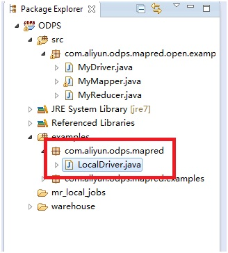{kind=link}
选中LocalDriver.java，右键选择Run As -> Run Configuration，点击确认：
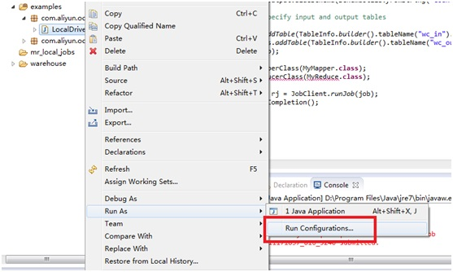{kind=link}
点击后，出现如下对话框，双击Java Application：
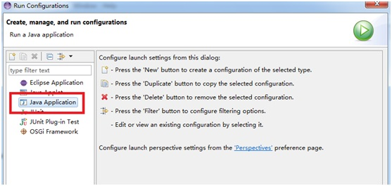{kind=link}
双击后，选择”(x)=Arguments”，在输入框中输入MyDriver mr_test，并确认。其中MyDriver表示上文中提到的MapReduce Driver的类名。mr_test表示本地项目空间名称，详情请参考 本地运行MapReduce ：
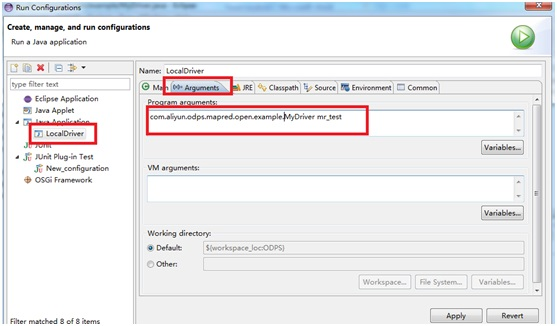{kind=link}
确认后，开始本地运行MapReduce程序，如果配置正确，会看到如下提示：
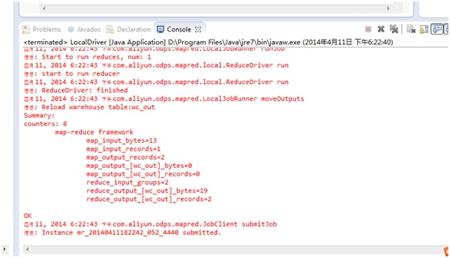{kind=link}
有如上输出信息，说明本地运行成功。运行的输出结果在warehouse目录下。关于warehouse的说明请参考 本地运行MapReduce 。刷新ODPS工程：
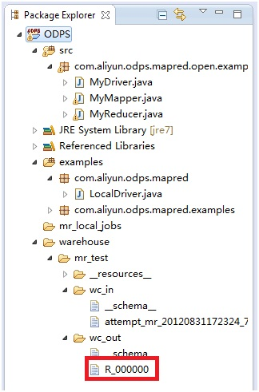{kind=link}
wc_out即是输出目录，R_000000即是结果文件。通过本地调试，确定输出结果正确后，可以通过Eclipse导出(Export)功能将MapReduce打包。打包后将jar包上传到ODPS中。在分布式环境下执行MapReduce，详情请参考 快速入门 。
需要说明的是，wc_in及wc_out是程序的输入及输出表。这个是eclipse插件的默认配置。如果想更改这个配置，可以修改MyDriver.java的内容：

本地调试通过后，用户可以通过Eclipse的Export功能将代码打成jar包，供后续分布式环境使用。在本示例中，我们将程序包命名为mr-examples.jar。选择src目录，点击Export：
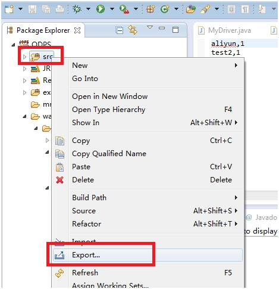{kind=link}
选择导出模式为Jar File：
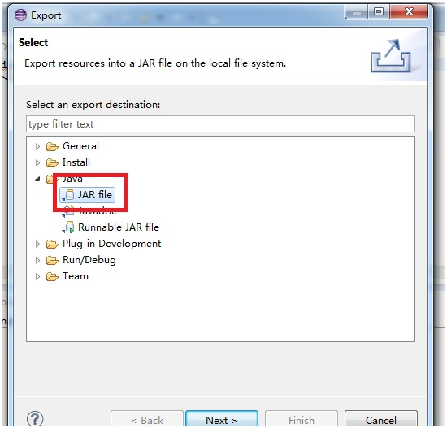{kind=link}
仅需要导出src目录下package(com.aliyun.odps.mapred.open.example)，Jar File名称指定为“mr-examples.jar”：
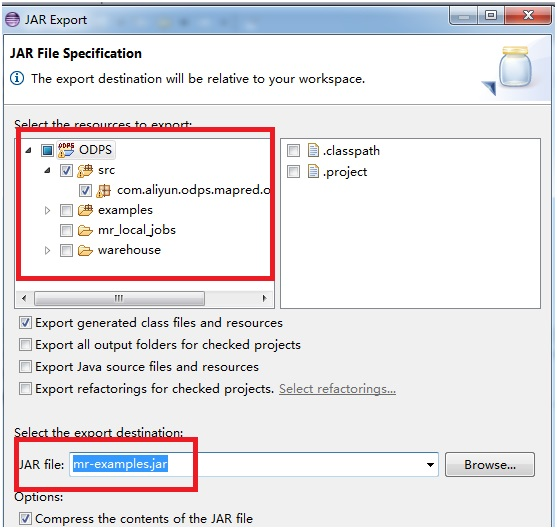{kind=link}
确认后，导出成功。
如果用户想在本地模拟新建Project，可以在warehouse下面，创建一个新的子目录(与mr_test平级的目录)，例如：my_new_project。如果用户想新建表，可以再Project目录下创建目录，例如：dual，并指定dual的表结构及数据，目录关系为：
warehouse
|______mr_test(项目空间目录)
| |______wc_in(表数据目录)
| | |____ data(文件)
| | |____ __schema__ (文件)
| |
| |______wc_in(表数据目录)
| |____ data(文件)
| |____ __schema__ (文件)
|
|______my_new_project
|______dual
|___data
| __schema__
__schema__文件示例：
my_new_project.dual,col1:bigint,col2:string,col3:boolean,col4:double
UDF开发插件介绍¶
在本章节我们将介绍如何使用Eclipse插件开发并在本地运行UDF。
首先，选中src文件，右键选择新建(New) –> UDF：
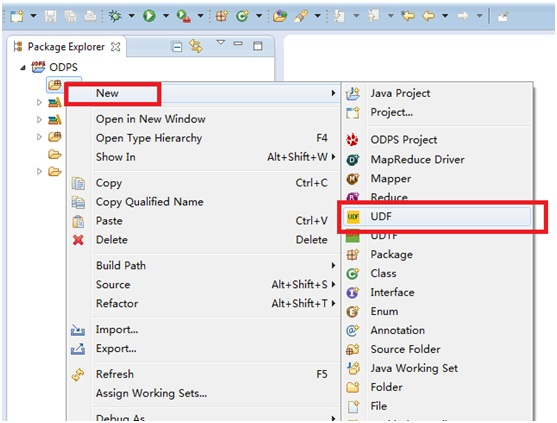{kind=link}
选择创建UDF后，需要输入Package名称(本示例为org.alidata.odps.udf.examples)，UDF类名(MyUDF)，点击确认：
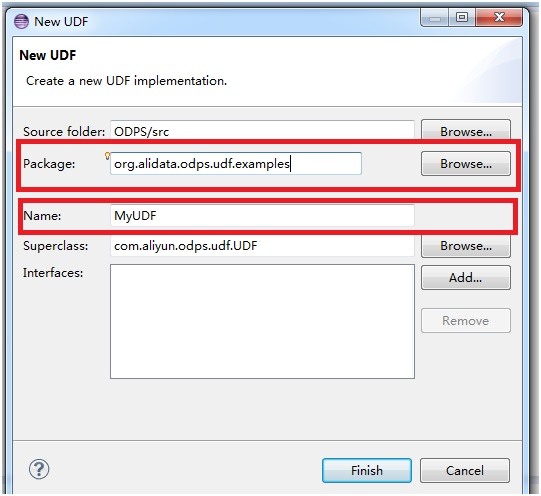{kind=link}
此时会在src下生成两个Package，其中org.alidata.odps.udf.examples用于编写UDF代码，而test.org.alidata.odps.udf.examples用于模拟UDF的本地运行。打开org.alidata.odps.udf.examples下的MyUDF.java文件，其内容是Eclipse插件为用户自动创建的UDF开发模板。如果用户创建的是UDTF，则此文件的内容即是一个UDTF模板：
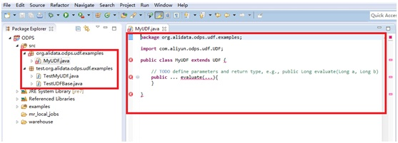{kind=link}
编辑UDF模板：

UDF代码编写完成。为了运行这个UDF，我们还需要编写输入文件TestMyUDF.in。而TestMyUDF.out将会作为MyUDF本地运行时的输出目录：
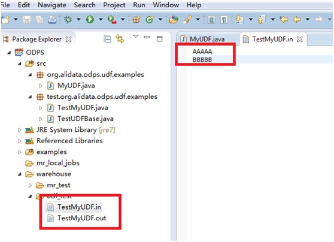{kind=link}
选中TestMyUDF.java，右键选择Run As -> Java Application：
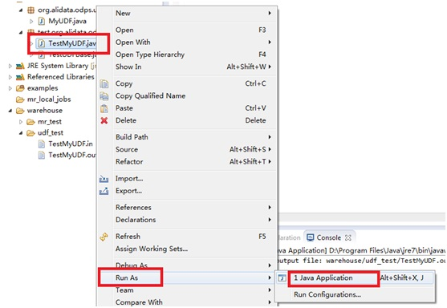{kind=link}
运行成功后在屏幕下方会出现成功提示。打开输出文件TestMyUDF.out会看到输出结果：
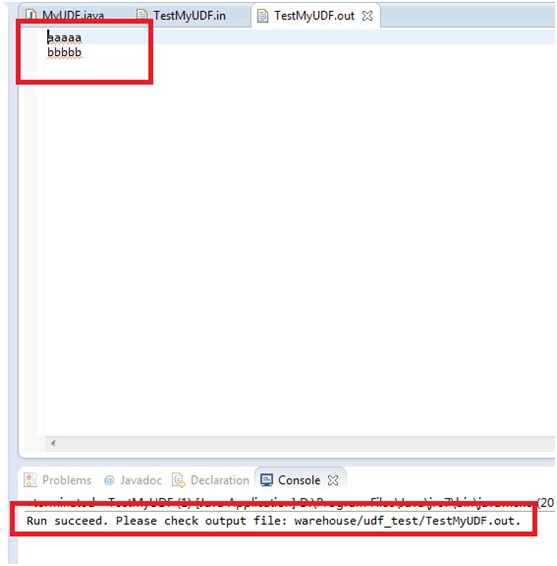{kind=link}
通过本地调试，确定输出结果正确后，可以通过Eclipse导出(Export)功能将MapReduce打包。打包后将jar包上传到ODPS中。UDF的导出过程与MapReduce导出过程类似，请注意，不需要将整个工程打包，仅需要打包UDF对应的类文件即可。